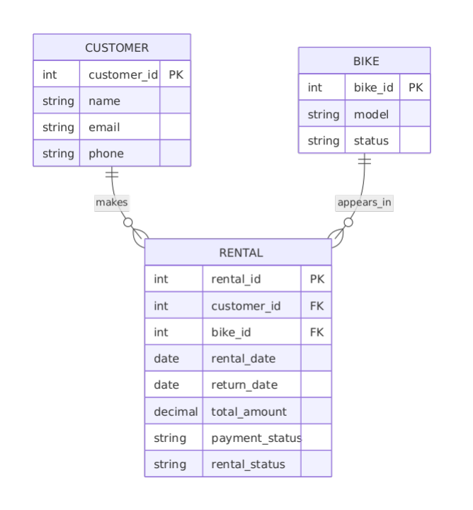
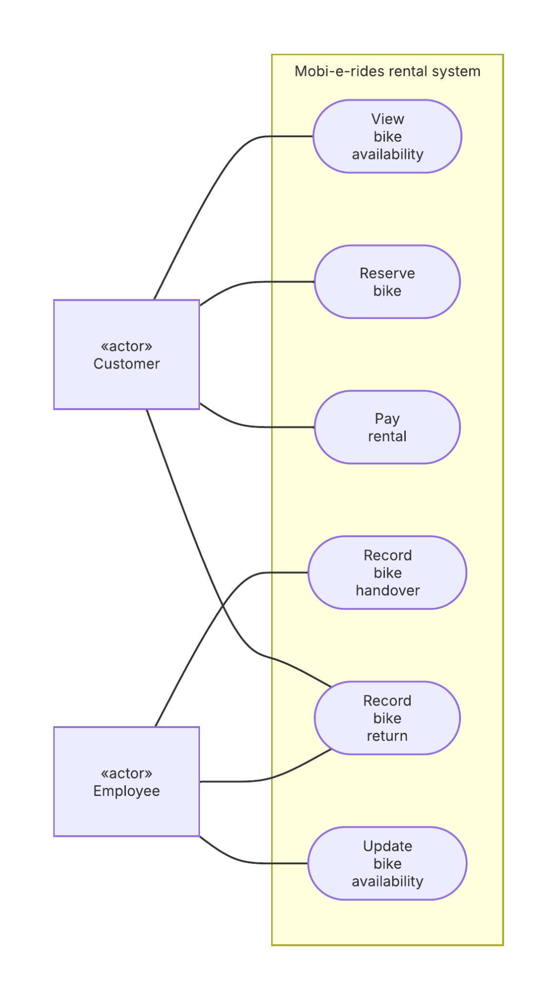
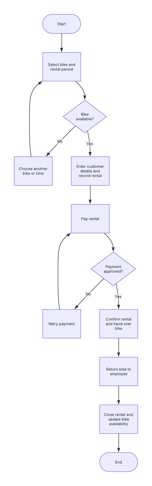

Mobi-e-rides — End-to-End Business Analysis
Peer-to-Peer Bicycle and eBike Rental Platform
This case applies business analysis techniques to a proposed peer-to-peer bicycle and e-bike rental platform in Mexico City, linking stakeholder needs with prioritized requirements, traceability and solution models.
The business need
Customers need to find an available bike, make a reservation and pay. Employees need to record handovers and returns and keep availability up to date. The proposed launch uses a basic booking website with employee assistance at pickup and return.
End-to-end Business Analysis scope
The case brings together the main analysis activities needed to define a proposed solution:
- Business understanding: define the service concept, business need and analysis scope.
- Stakeholder analysis: identify five stakeholder groups and consider their roles and needs.
- Requirements elicitation: prepare interview and survey questions and propose observation and workshop activities.
- Requirements analysis: define three core requirements and prioritize features using MoSCoW.
- Requirements management: connect the priority requirements to the corresponding models through traceability.
- Solution modeling: represent system interactions, core data entities and the end-to-end rental process.
A three-screen prototype and further stakeholder validation are proposed as next steps.
This is an academic design exercise adapted from the IBM exemplar. Interviews, observations, workshops, surveys and prototype testing have not been conducted. The outputs are proposed requirements and models.
Requirements and model connections
| ID | Requirement | Model connection |
|---|---|---|
| REQ-01 | Easy booking | Reserve bike; Customer and Rental records. |
| REQ-02 | Payment processing | Pay rental; payment_status in Rental. |
| REQ-03 | Bike availability tracking | View and update availability; Bike status and the agreed rental period. |
The three models
Explore and edit the three diagrams in Lucidchart.
Entity Relationship Diagram

UML Use Case Diagram

Rental Process Flowchart

What I would validate next
I would review the requirements with customers and employees, clarify the handover and return information they need, and test the proposed booking journey with a simple prototype. Cancellation, refunds and detailed payment-provider integration would require further analysis.
Academic reference: IBM, Business Analysis and Modeling for an eBike Rental Startup, exemplar solution. Adapted using my stakeholder questions, requirements, priorities and models. Research and validation activities described as proposals have not been conducted.